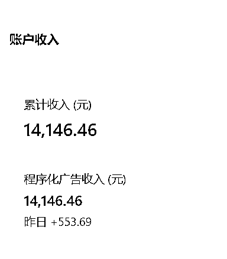
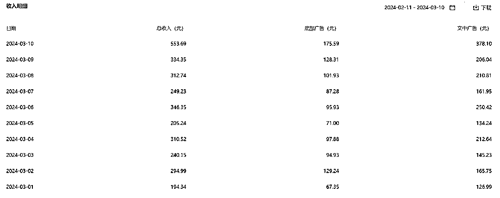

来源：https://balfcirt91j.feishu.cn/docx/HZ97doS1ootZBZxDkORcy2Tcnhc
大家好，我今年35岁，目前是在从事自媒体代运营行业，
我通过菜菜老师的AI营销100节课中的公众号爆文改写，前后十个号，
一共出了8篇十万加文章，
最高一篇的流量有70多万，这8篇共计收益有2万元。
不过大家也知道，流量号不太稳定，不过我目前有一个账号还可以，
持续了3个月，大约每天阅读量5W左右，收益300元。


我的经历很特殊，我从读书的时候就开始生病了，强直性脊柱炎。
后来上班也是因为身体不好就离职了，
目前是在家边养病边做自媒体的状态。
我是在去年12月开始接触ChatGPT的，在这之前其实我还使用过文心一言和讯飞等等，
但是感觉人工智障。
通过另外一位博主介绍，认识了菜菜老师，
了解到她比较擅长用AI创作内容，
而且她的Ai营销100节课程当中正好有公众号文章改写的场景，于是就下单买了。
比较好笑的是，我当时连命令在哪里输入都不知道，
不过通过一步步的实操和老师的帮助，我大概在一个月后爆了第一篇十万加。
这里说下我爆文的方法，我会建立矩阵号，
然后再去相应的领域找对标账号，并且找到爆文，
再把它们输入洗稿的工具中，进行批量化生产。
在这个过程中，你可能会问，质量肯定不太行是吧？
洗稿工具洗出来可能没办法保证原创。
没关系，在我这里，账号是消耗品，我会去博一个概率，
如果有跑出来，能进流量池的账号，我就开始进行精细化洗稿，
而这里精细化洗稿是指，我会找2篇爆款，用菜菜老师的ChatGPT改写命令去操作，
这个方法也是课程里学习的，既有方法的阐述，又有完整命令，完全就是保姆型的操作。
用这种方法弄出来的文章，原创度比较高，非常安全。
之前用机器弄的稿可能会被判查重违规，但用老师的命令没有违规过。
其实在买了菜菜老师课程的同时，我还买了其他老师的课，一共花了4万元。
对比了下，在内容详细度方面，菜菜的更胜一筹，讲得很清楚。
后来我一个朋友，也是做此方面的，他看到我做得还可以，于是向我请教，
我把菜菜老师的方法教给他，还把命令发给他，他是做中老年赛道的，有40多个账号，
结果不教还好，一教，他把手下三个人开掉了。
原来自媒体团队有6个人，现在是3个人，每个月帮他节省了1万多。
我也是哭笑不得。
再给大家透露一个我们爆文行业的天花板，我也是惊呆了。
一个800万粉丝的账号，每个月流量收入是15万。
不过还好，他们没有用ChatGPT，他们还不会用，都是人工写，
之前也写过，但是说是人工智障，他们不会方法。
而我会这个方法，我期待有一天能达到他们那个水平。
不过也要提醒下大家，公众号流量主的领域并不稳定。
希望大家还是能多学习一些其他的场景，多掌握AI写作的技术，
在这个时代，能凭借这项能力，找到有更多的机会。
菜菜的提醒：
虽然这位同学在AI方面是0基础开始，但是他确实之前做了好多年的自媒体，
有一定积累，并不是完全从0开始。
如果你自身的能力只有40分，AI并不能把你的能力变成90分。
能力还欠缺的，先打造能力，有一定能力，想用AI提效起飞的，就去研究。